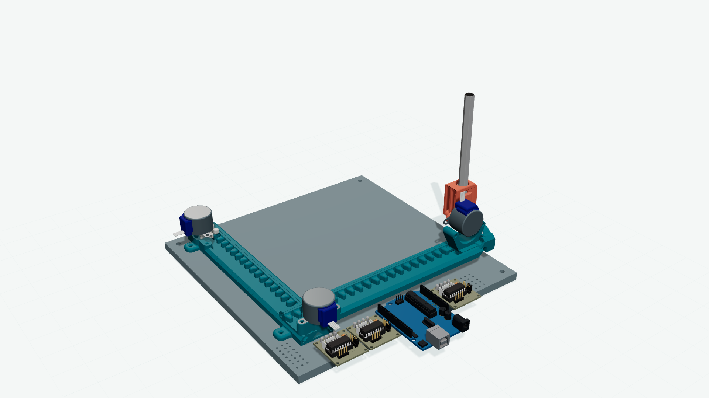
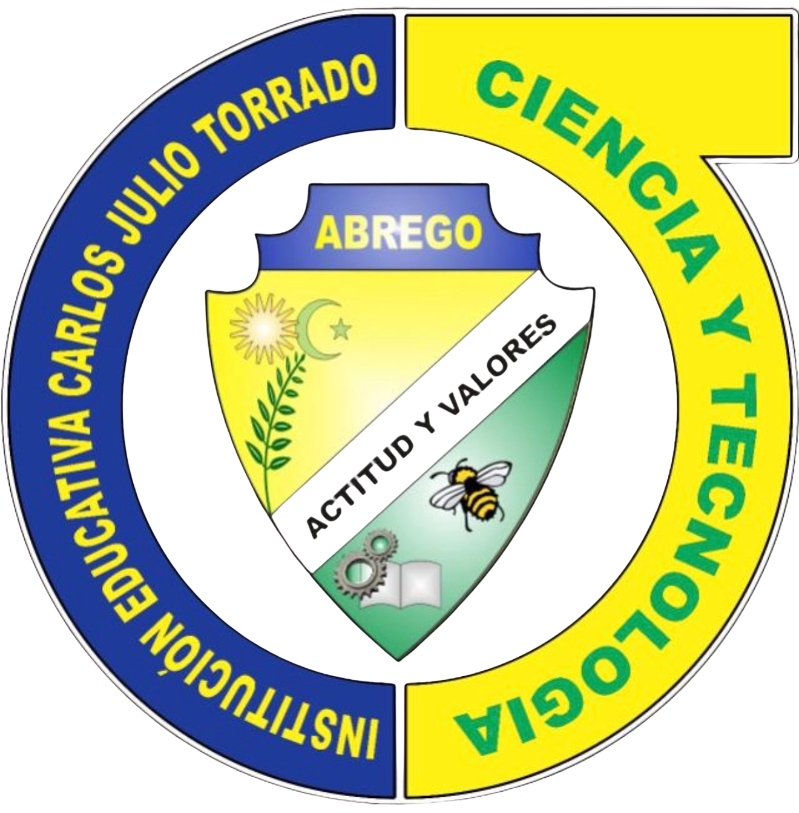

Activa JavaScript para recorrer las diapositivas y explorar la mecánica. También puedes abrir la presentación en PDF.
El guion acompaña la diapositiva activa. Usa ← y → para cambiar.
 ARIATU VOZ TOMA FORMA
ARIATU VOZ TOMA FORMA